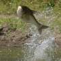
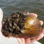

Asian Carp Science.
The USGS is conducting several sub-projects as part of the GLRI.
LEARN MORE
 Beach Health Webinar - Feb. 2014
Beach Health Webinar - Feb. 2014
Providing the beach-going public with the best water-quality information available.
WATCH VIDEO

NEW Invasive Species Project
Controlling Dreissenid Mussels with Pseudomonas fluorescens CL145A.
LEARN MORE
 Projects List
Projects List
What is the USGS working on?
LEARN MORE
 Loon Migration Studies
Loon Migration Studies
Track the movements and migrations of loons.
TRY IT